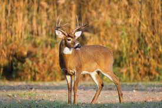
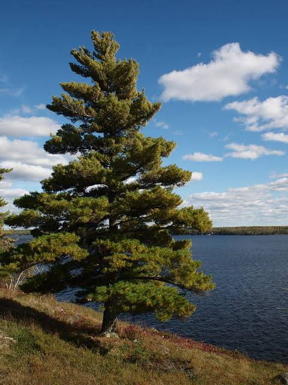
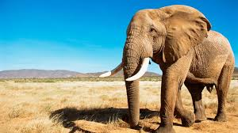

The blue whale (Balaenoptera musculus) is the largest animal known to have ever existed on Earth. They are found in oceans worldwide.
The white-tailed deer (Odocoileus virginianus) is a medium-sized deer native to the Americas. It is known for its distinctive white tail.
The white pine tree, scientifically known as Pinus strobus, is an iconic species native to eastern North America. It is recognized for its towering height, soft blue-green needles, and large cones.
The African elephant, the largest land mammal, boasts an iconic trunk and distinctive large ears. Feeding mainly on vegetation, they play a crucial role in shaping ecosystems. Threatened by habitat loss and poaching, conservation efforts aim to safeguard these magnificent creatures.
